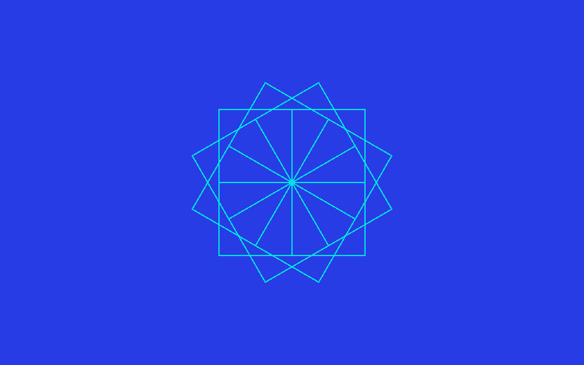
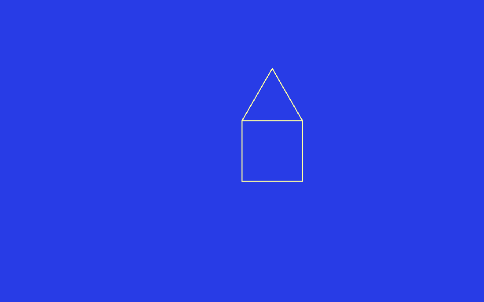
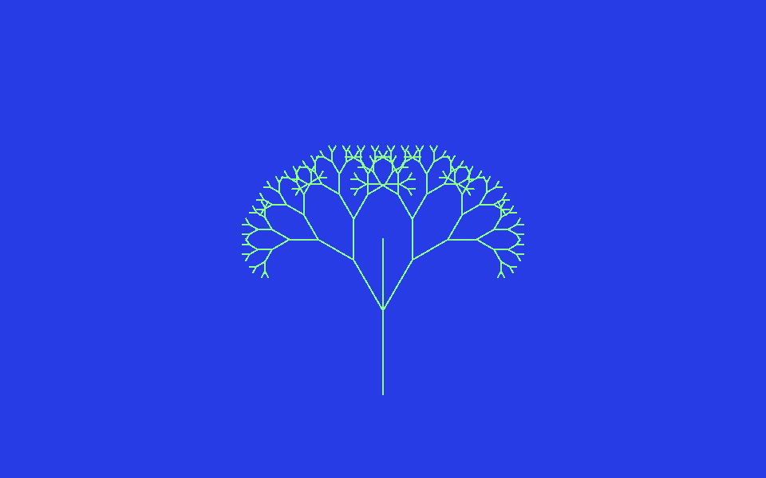

From the square to the arcade
A step-by-step journey: you start with a single line, you finish with your own game
This journey is meant to be followed in order, from start to finish. Each step unlocks a new power and ends with a small « your turn » challenge. You need to know nothing to begin. By the end, you will have programmed a real little game, a brick-breaker, by putting together everything you learned along the way.
EDIT), validate with
Ctrl+S (on a Mac : ⌘+S), then run
the command from the ? prompt. Change the numbers, watch what
happens : tinkering is how you understand.
The steps : 1. The first line · 2. Smart laziness · 3. Inventing your own words · 4. Building with bricks · 5. Your first error · 6. Deciding · 7. Remembering · 8. The wow effect · 9. Making it move · 10. Draw your own shapes · 11. The bouncing ball · 12. Your game
Step 1. The first line
When GoLogo starts, type ST (SHOWTURTLE) to bring up the graphics
area. The turtle is there, in the centre, pointing up. Give it an order :
? FORWARD 100
? RT 90
? FORWARD 100It moves, turns right, moves again. FORWARD (or FD)
moves, RT turns right, LT turns left. With just these, you
can already draw a square, side by side.
Your turn : finish the square by hand (four FD
and four RT 90).
Step 2. Smart laziness
Doing the same thing four times is tedious to type. A good programmer is
lazy : they make the machine repeat. That is what REPEAT is
for :
? REPEAT 4 [ FD 100 RT 90 ]The square in one line. Change the 4 and the angle for other
polygons : the angle is always 360 divided by the number of sides.
? REPEAT 3 [ FD 120 RT 120 ] ; triangle
? REPEAT 6 [ FD 80 RT 60 ] ; hexagonYour turn : make a circle. Hint : lots of small steps
and tiny turns, for instance REPEAT 360 [ FD 5 RT 1 ].
Step 3. Inventing your own words
You will want to reuse your square without retyping it. So teach the turtle this
new word, with TO … END :
TO SQUARE
REPEAT 4 [ FD 100 RT 90 ]
ENDGoLogo replies SQUARE DEFINED. From now on SQUARE is a
command like any other. And to choose the size, add a parameter :
TO SQUARE :SIDE
REPEAT 4 [ FD :SIDE RT 90 ]
END? SQUARE 50
? SQUARE 150Your turn : write POLYGON :N :SIDE that draws a
polygon with :N sides. (Reminder : the angle is
360 / :N.)

Twelve calls to SQUARE, turning a little each time : a rosette.
Step 4. Building with bricks
A big program is just small programs placed end to end. Define a wall and a roof, then a house that uses them :
TO WALL
REPEAT 4 [ FD 100 RT 90 ]
END
TO ROOF
REPEAT 3 [ FD 100 RT 120 ]
END
TO HOUSE
CS WALL FD 100 RT 30 ROOF
ENDThis is the single most important idea in programming : break a big problem into small pieces you know how to solve.
Your turn : add a DOOR to the house. Remember to
lift the pen (PU) to move the turtle without drawing, and to lower it
(PD) before drawing.

HOUSE : a square wall topped by a triangular roof.
Step 5. Your first error
Here you learn something the coloured blocks will never teach you : to read an error and fix it. Type something silly on purpose :
? FORWARD HELLOGoLogo objects : FORWARD DOESN'T LIKE HELLO. It does not just say
« no » : it explains. FORWARD expects a number, not a word.
Another classic :
? SQUAR 50
I DON'T KNOW HOW TO SQUARA typo : GoLogo does not know SQUAR. You fix it, you try again.
That is what programming for real is : you make mistakes, you
read the message, you fix them. This reflex will serve you in every language, later
on.
Step 6. Deciding
An interesting program does not always do the same thing : it
decides. The IF command runs instructions only if a condition
is true :
? IF 3 > 2 [ PRINT "BIGGER ]A condition is a question you answer yes or no (in Logo : TRUE or
FALSE). These questions always end with a ? :
EQUAL? (equal ?), GREATER? (bigger ?),
LESS? (smaller ?). You can also write comparisons with the signs
=, >, <, like in maths. With a
second list, IF does « otherwise » :
TO SIGN :N
IF :N > 0 [ PRINT "POSITIVE ] [ PRINT "NEGATIVE_OR_ZERO ]
ENDYour turn : write a procedure that says EVEN or
ODD depending on the number. Hint : REMAINDER :N 2 is 0
when :N is even.
Step 7. Remembering
To count points or remember a position, the turtle needs memory. A
variable is a name that holds a value. You create it with
MAKE and read it back with a colon :
? MAKE "SCORE 0
? MAKE "SCORE :SCORE + 1
? PRINT :SCORE ; prints 1« Take the score, add 1, put it back in the score. » That is exactly how you keep
a point counter in a game. Keep this word SCORE in mind : you will
use it again at the end.
Step 8. The wow effect
Here is a surprising idea : a procedure is allowed to call itself. It is like a Russian doll that contains a smaller doll, which contains a smaller one still… We call this recursion, and it is perfect for drawings that repeat at smaller scales. A tree, for instance : a trunk, then two smaller branches, and each branch is itself a little tree! You just need a rule to stop, or it would go on forever : here, we stop when the branch becomes tiny.
TO TREE :T
IF :T < 10 [ STOP ] ; branch too small: we stop
FD :T
LT 30 TREE :T * 0.7
RT 60 TREE :T * 0.7
LT 30
BK :T
END
TO DRAWTREE
CS WINDOW SETH 0 BK 150 TREE 120
ENDRun DRAWTREE. A few lines, and a whole tree appears. This is often the
moment you catch the bug.

Each branch splits into two smaller branches.
Step 9. Making it move
So far the turtle was drawing. Now it will move over time. Two
ingredients : WAIT makes a small pause (in sixtieths of a second),
and a loop repeats the movement. Here is a sprite you steer with the arrow keys
(JOYSTICK 0 is emulated by the arrows) :
TO DRIVE
CS WINDOW
SPRITE 2
WHILE [ NOT BUTTON? 0 ] [
MAKE "D JOYSTICK 0
IF :D = 1 [ SETH 0 FD 10 ] ; up
IF :D = 5 [ SETH 180 FD 10 ] ; down
IF :D = 3 [ SETH 90 FD 10 ] ; right
IF :D = 7 [ SETH 270 FD 10 ] ; left
WAIT 2
]
ENDRun DRIVE and steer the car with the arrows. Press the space bar (the
fire button) to stop. WHILE repeats the block as long as its
condition is true : here, as long as the button is not pressed.
WINDOW field lets the turtle roam without hitting the edges. It is
the mode we use for games.
Step 10. Draw your own shapes
So far the turtle had a ready-made shape. But you can draw it one yourself! The
DEFSPRITE command lets you create a shape on a small grid of 16 by 16,
a bit like pixel art. Each line is a string of characters : a dot .
for an empty cell, a letter (for example X) for a filled cell. Let us
draw a round ball and a brick :
DEFSPRITE 3 [
..XXXX..
.XXXXXX.
XXXXXXXX
XXXXXXXX
XXXXXXXX
XXXXXXXX
.XXXXXX.
..XXXX..
]
DEFSPRITE 4 [
XXXXXXXXXXXXXX
XXXXXXXXXXXXXX
XXXXXXXXXXXXXX
XXXXXXXXXXXXXX
]Look closely at the first one : if you squint, the Xs draw a
round shape. Shape number 3 is now your round ball, number 4 your brick. You pick
them with SPRITE, like the ready-made shapes :
CS ST
SPRITE 3 ; the turtle becomes a round ball
SETPC 1 ; in red (the shape takes the pen colour)Two things to remember : the numbers of your shapes start at 3
(0, 1 and 2 are the built-in shapes: triangle, turtle and car), and your shape takes
the pen colour (SETPC) and turns with the turtle.
Your turn : draw your own shape, a spaceship, a heart, a
little person. You will be able to use it in the game, at the end : a real round
ball (SPRITE 3) and real bricks looks a lot nicer than triangles.
Step 11. The bouncing ball
Before making a game, one essential brick is missing : a ball that bounces off the edges. It looks complicated, but the idea is very simple.
Imagine the ball moving in small steps, frame after frame. At each step it shifts :
a bit to the right, a bit up. We store these two shifts in two variables :
:DX (how far right in x) and :DY (how far
up in y). As long as we hit nothing, we repeat : move by
:DX and :DY, over and over.
Now, the bounce. Think of a real ball you throw at the right-hand wall : it
comes back to the left. Its vertical motion does not change, only its horizontal
motion flips. In Logo, flipping a number is 0 - :DX (if
:DX was 9, that gives −9 ; the ball will now go left). Same at the
top and bottom, but there it is :DY that flips. Here goes :
TO INITBALL
CS WINDOW
DEFSPRITE 3 [
..XXXX..
.XXXXXX.
XXXXXXXX
XXXXXXXX
XXXXXXXX
XXXXXXXX
.XXXXXX.
..XXXX..
]
SETTURTLE 0 SPRITE 3 SETPC 7 ST PU SETXY 0 0 ; reuse the round ball (shape 3) from step 10, in white
MAKE "DX 9 MAKE "DY 6
END
TO BOUNCE
IF XCOR + :DX > 780 [ MAKE "DX 0 - :DX ]
IF XCOR + :DX < -780 [ MAKE "DX 0 - :DX ]
IF YCOR + :DY > 480 [ MAKE "DY 0 - :DY ]
IF YCOR + :DY < -480 [ MAKE "DY 0 - :DY ]
SETXY XCOR + :DX YCOR + :DY
END
TO BOUNCEBALL
INITBALL
REPEAT 300 [ BOUNCE WAIT 1 ]
ENDRun BOUNCEBALL : the ball shoots off diagonally and bounces in
every corner. Let us break down BOUNCE, line by line :
XCORgives the ball's left-right position,YCORits bottom-top position. The right edge is at800, the left at-800, the top at500, the bottom at-500.XCOR + :DXis where the ball would be at the next step. The first line says : « if at the next step the ball passes780(almost the right edge), then flip:DX». It will go back left instead of leaving.- The next three lines do the same for the left edge, the top and the bottom.
SETXY XCOR + :DX YCOR + :DYfinally moves the ball by its step (with the possibly-flipped speed).
We check the edge before moving, so the ball never overshoots. This is exactly the trick we reuse in the game.
Your turn : change :DX and :DY for
a faster or slower ball. Put SETPENSIZE 6 first and lower the pen
(PD) so it leaves a trail.
Step 12. Your game: the brick-breaker
You have everything you need. A brick-breaker is just an assembly of things you
already know : squares (the bricks), a loop, some IFs, a score, and
the bouncing ball.
What is new is that we will have several turtles on screen at the same
time, one per game object. Each turtle has a number : turtle
0 will be the ball, turtle 1 the paddle, and turtles
2 to 15 the fourteen bricks. To give orders to one precise turtle, you type
SETTURTLE followed by its number : after that, the commands (move,
place, hide…) talk to that one.
Drawing the game shapes
We learned to draw our own sprites in step 10. Let us use that to give real shapes to our objects : a round ball (shape 3), a wide paddle (shape 4) and a brick (shape 5).
TO SHAPES
DEFSPRITE 3 [
..XXXX..
.XXXXXX.
XXXXXXXX
XXXXXXXX
XXXXXXXX
XXXXXXXX
.XXXXXX.
..XXXX..
]
DEFSPRITE 4 [
XXXXXXXXXXXXXXXX
XXXXXXXXXXXXXXXX
XXXXXXXXXXXXXXXX
]
DEFSPRITE 5 [
XXXXXXXXXXXXXX
XXXXXXXXXXXXXX
XXXXXXXXXXXXXX
XXXXXXXXXXXXXX
]
ENDWe pick these shapes with SPRITE 3, SPRITE 4,
SPRITE 5, and each one takes its turtle's pen colour
(SETPC) : we will make the ball white, the paddle gray and the
bricks red, right after.
Placing the bricks
SETTURTLE :B selects turtle number :B (and creates it if
it does not exist yet). We want to arrange the 14 bricks in a grid : 7 columns,
2 rows. The loop FOR [ B 2 15 ] runs :B through every number
from 2 to 15, one brick per turn :
TO SETBRICKS
FOR [ B 2 15 ] [
MAKE "I :B - 2
MAKE "COL REMAINDER :I 7
MAKE "ROW INTQUOTIENT :I 7
MAKE "BX 100 * :COL - 300
MAKE "BY 70 * :ROW + 250
SETTURTLE :B SPRITE 5 SETPC 1 ST PU SETXY :BX :BY
]
ENDEach brick takes shape 5 (SPRITE 5) in red (SETPC 1). The
middle calculation may look mysterious, but it is just grid arithmetic. We first
number the brick from 0 (:I is 0 for the first, 1 for the second…). Then :
REMAINDER :I 7gives the column (0 to 6) : it is the remainder when you divide by 7. For the 8th brick (:I= 7), the remainder is 0 : we go back to the left column.INTQUOTIENT :I 7gives the row (0 or 1) : it is how many times 7 fits into:I. The first 7 bricks are row 0, the rest row 1.:BXand:BYturn column and row into a real position : we space the columns by 100 steps and raise the rows by 70 steps.
Setting up the game
We draw the shapes (SHAPES), prepare the screen, then place the white
ball at the centre-bottom and the gray paddle at the bottom :
TO SETUP
SHAPES
CS WINDOW HT
MAKE "SCORE 0
SETTURTLE 0 SPRITE 3 SETPC 7 ST PU SETXY 0 -100 ; the ball, white
MAKE "DX 8 MAKE "DY 8
SETTURTLE 1 SPRITE 4 SETPC 8 ST PU SETXY 0 -400 ; the paddle, gray
SETBRICKS
ENDBreaking the bricks
We go through the 14 bricks and, for each, we ask GoLogo : « does the ball
touch it? » That is the job of COLLIDE? :
COLLIDE? LIST 0 :B is TRUE if turtle 0 (the ball) and turtle
:B (the brick) overlap on screen. (LIST 0 :B just builds the
little list of the two numbers, for example [ 0 5 ].)
When it touches, we do three things :
ASK :B [ HT ]: we talk to brick:Bfor one order and tell itHT(Hide Turtle). The brick disappears. And since a hidden turtle can no longer touch anyone, this brick will never be counted again : it is « broken » for good.MAKE "DY 0 - :DY: the ball bounces (we flip its vertical motion, as off a wall).MAKE "SCORE :SCORE + 1: one more point.
TO HITBRICKS
FOR [ B 2 15 ] [
IF COLLIDE? LIST 0 :B [
ASK :B [ HT ]
MAKE "DY 0 - :DY
MAKE "SCORE :SCORE + 1
]
]
ENDOne frame of the game
A « frame » is everything that happens in one instant of the game. This time we only bounce off three walls : left, right and top. The bottom is no longer a wall! We move the ball, then :
IF COLLIDE? LIST 0 1 [ … ]: if the ball touches the paddle, it goes back up.ABS :DYmakes the vertical motion always positive (upward), so it climbs for sure.IF YCOR < -480 [ BALLLOST ]: if the ball went all the way to the bottom without being caught by the paddle, it is lost (we seeBALLLOSTright after).HITBRICKS: we break the bricks it touched.
A game, deep down, is just that : one frame, repeated very fast, over and over.
TO FRAME
SETTURTLE 0
IF XCOR + :DX > 780 [ MAKE "DX 0 - :DX ]
IF XCOR + :DX < -780 [ MAKE "DX 0 - :DX ]
IF YCOR + :DY > 480 [ MAKE "DY 0 - :DY ]
SETXY XCOR + :DX YCOR + :DY
IF COLLIDE? LIST 0 1 [ MAKE "DY ABS :DY ]
IF YCOR < -480 [ BALLLOST ]
HITBRICKS
ENDWhen the ball is lost
If the ball shoots to the bottom without the paddle catching it, it is lost. We play a small sound to signal it, then we relaunch it from its starting position, ready to go again :
TO BALLLOST
PLAY "DO ; little « beep » of a lost ball
SETTURTLE 0 SETXY 0 -100 ; put the ball back at the start
MAKE "DX 8 MAKE "DY 8 ; and it heads up again
ENDWatch it play itself
Even before adding the controls, run this : the ball bounces everywhere and breaks the bricks all by itself. If you see the bricks disappear one by one, your game engine works.
TO DEMO
SETUP
REPEAT 500 [ FRAME WAIT 1 ]
ENDYour turn, for real
All that is left is to take the controls. Add the paddle steered by the arrows :
TO MOVEPADDLE
SETTURTLE 1
MAKE "D JOYSTICK 0
IF :D = 7 [ IF XCOR > -700 [ SETXY XCOR - 20 YCOR ] ]
IF :D = 3 [ IF XCOR < 700 [ SETXY XCOR + 20 YCOR ] ]
END
TO PLAYGAME
SETUP
WHILE [ :SCORE < 14 ] [
MOVEPADDLE
FRAME
WAIT 1
]
SETTURTLE 0 HT LABEL [ YOUWIN ]
ENDWe call the procedure PLAYGAME. So run PLAYGAME
and move the paddle with the arrows. When the 14 bricks are broken, you win.
Well done : you have just programmed a video game.
- count lives : each lost ball costs one, and after 3 lost
balls the game is over (show
LOST). You already haveBALLLOST: all that is left is to count with a variable ; - show the score with
LABEL :SCORE; - speed the ball up with every brick broken ;
- more bricks, several rows of colours (
SETPC).
The complete program
Here is the whole game, in one piece. Copy all of it into the editor
(EDIT), validate with Ctrl+S, then type
PLAYGAME to play :
; --- Draw the shapes: ball (3), paddle (4), brick (5) ---
TO SHAPES
DEFSPRITE 3 [
..XXXX..
.XXXXXX.
XXXXXXXX
XXXXXXXX
XXXXXXXX
XXXXXXXX
.XXXXXX.
..XXXX..
]
DEFSPRITE 4 [
XXXXXXXXXXXXXXXX
XXXXXXXXXXXXXXXX
XXXXXXXXXXXXXXXX
]
DEFSPRITE 5 [
XXXXXXXXXXXXXX
XXXXXXXXXXXXXX
XXXXXXXXXXXXXX
XXXXXXXXXXXXXX
]
END
; --- Place the 14 red bricks in a grid (turtles 2 to 15) ---
TO SETBRICKS
FOR [ B 2 15 ] [
MAKE "I :B - 2
MAKE "COL REMAINDER :I 7
MAKE "ROW INTQUOTIENT :I 7
MAKE "BX 100 * :COL - 300
MAKE "BY 70 * :ROW + 250
SETTURTLE :B SPRITE 5 SETPC 1 ST PU SETXY :BX :BY
]
END
; --- Set up the game: white ball (0), gray paddle (1), bricks ---
TO SETUP
SHAPES
CS WINDOW HT
MAKE "SCORE 0
SETTURTLE 0 SPRITE 3 SETPC 7 ST PU SETXY 0 -100
MAKE "DX 8 MAKE "DY 8
SETTURTLE 1 SPRITE 4 SETPC 8 ST PU SETXY 0 -400
SETBRICKS
END
; --- Move the paddle with the arrows ---
TO MOVEPADDLE
SETTURTLE 1
MAKE "D JOYSTICK 0
IF :D = 7 [ IF XCOR > -700 [ SETXY XCOR - 20 YCOR ] ]
IF :D = 3 [ IF XCOR < 700 [ SETXY XCOR + 20 YCOR ] ]
END
; --- Break the bricks the ball touches ---
TO HITBRICKS
FOR [ B 2 15 ] [
IF COLLIDE? LIST 0 :B [
ASK :B [ HT ]
MAKE "DY 0 - :DY
MAKE "SCORE :SCORE + 1
]
]
END
; --- Lost ball (reached the bottom): sound + relaunch from the start ---
TO BALLLOST
PLAY "DO
SETTURTLE 0 SETXY 0 -100
MAKE "DX 8 MAKE "DY 8
END
; --- One frame: move the ball, bounces, paddle, bricks ---
TO FRAME
SETTURTLE 0
IF XCOR + :DX > 780 [ MAKE "DX 0 - :DX ]
IF XCOR + :DX < -780 [ MAKE "DX 0 - :DX ]
IF YCOR + :DY > 480 [ MAKE "DY 0 - :DY ]
SETXY XCOR + :DX YCOR + :DY
IF COLLIDE? LIST 0 1 [ MAKE "DY ABS :DY ]
IF YCOR < -480 [ BALLLOST ]
HITBRICKS
END
; --- Start a game (type PLAYGAME) ---
TO PLAYGAME
SETUP
WHILE [ :SCORE < 14 ] [
MOVEPADDLE
FRAME
WAIT 1
]
SETTURTLE 0 HT LABEL [ YOUWIN ]
ENDAnd now? Explore the example programs, browse the command reference, and keep tinkering. You are no longer learning to program : you are programming.